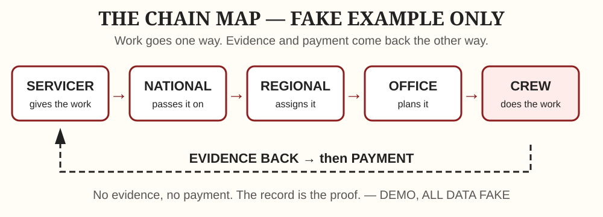
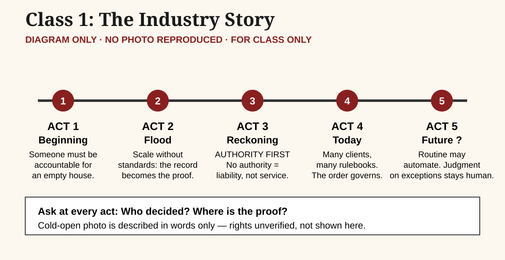
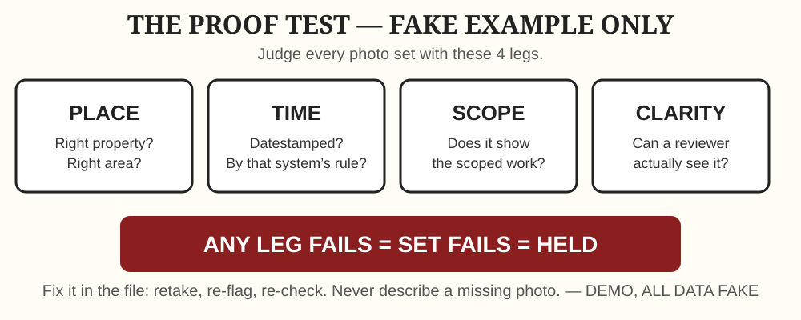
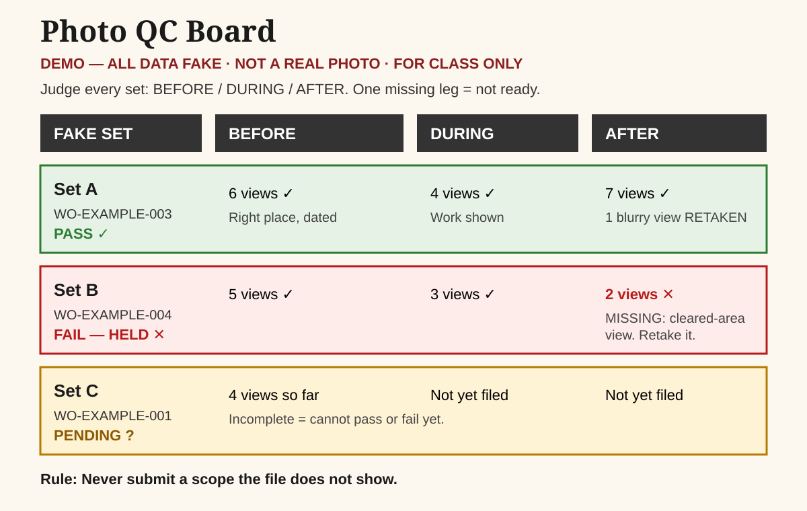
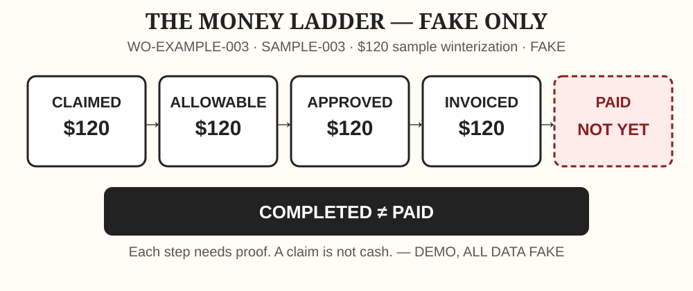
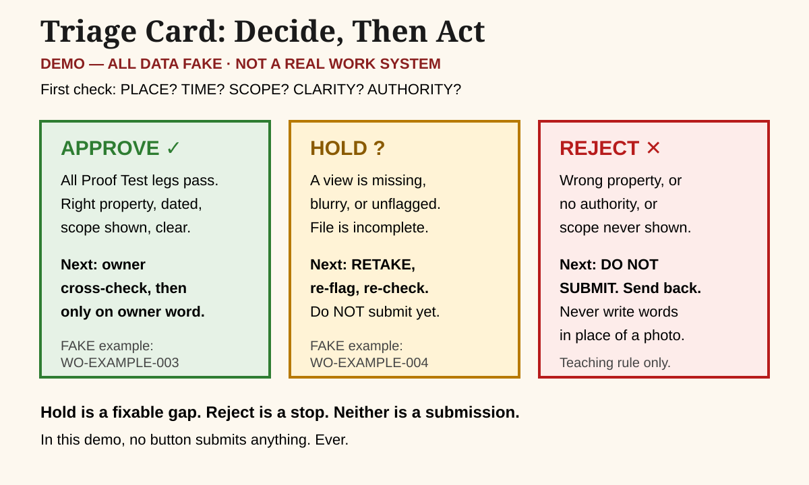
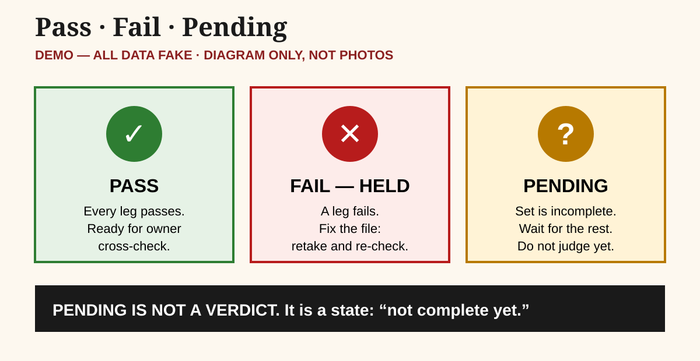
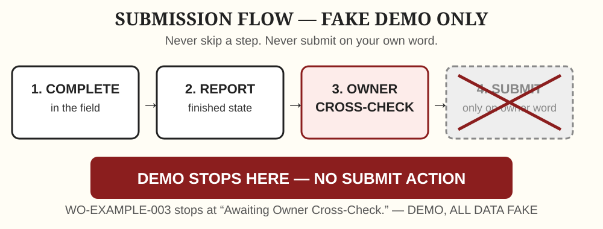

Direct link only · Hidden class area · FICTIONAL training material only · One page, scroll to read
All Classes in One Page
Opening rule, every class: "Everything in this class uses a fictional client and fictional rules. Real clients differ. The skill is reading the sheet in front of you."
How to use this page: Do not jump to the middle. Read in order, Class 1 to Class 6, then the demo example. Clicking the menu above stays on this page. There are no reading sub-links in this page. Scroll through each class, class by class.
The fictional spine case in this one-page version: Classes 2 to 6 use ONE fictional case, renamed here for untraceability as the Sample Case, with Sample Order 1 (Class 2), Sample Order 3 (Class 3), Sample Order 4 (Class 4), the Sample Case queue including Sample Order 2 clock material (Class 5), and Sample Order 5 (Class 6, war room). This matches the class subpages and the verified programme order: Class 3 is the evidence case, Class 4 is the money case, Class 5 is the queue case. The Sample Case, its property, its rule sheet, and every amount in it are fictional training material only. They are not real orders, real properties, real clients, or real prices. Class 1 does not use the spine case. Class 1 is the whole story.
How a session runs (from the instructor guide, supplementary): 0:00–0:03 cold verdict on an unseen file · 0:03–0:08 cold-call defence · 0:08–0:15 Socratic pressure · 0:15–0:23 paired live audit (the foil) · 0:23–0:27 re-vote + expert reveal · 0:27–0:30 transfer bridge. Cutting rule: cut pair discussion first. Never cut the re-vote + expert reveal or the transfer bridge. Trainer talk is at most about 8 minutes per session, except Class 1 at about 10 minutes by deliberate owner order. Scaffolding fades: Sessions 1–2 model the full audit aloud, Sessions 3–4 model only the first step, Sessions 5–6 give no modelling — learners audit cold.
To be completed or decided by owner (not invented here): Exact on-screen slide text for all six decks. Exam length, exam version, cut-scores, schedule format, and photo medium. The line-item audit of the Sample Order 5 war-room math. The unseen practice case for Class 6, with its rubric and decoy key. The audit of the 21-claim evidence set. Image rights for the Class 1 cold-open photograph — it is described, never reproduced, in this page. Which real rule sheets swap in first — no real rule sheet is used in this page.
Class 1 — The Industry Behind the Work Order
- Topic: The whole industry story, in five acts.
- Mental model: A work order is one link in a chain of responsibility, evidence, and money.
- Exit skill: Tell the industry's full story (all five acts) and map the system it produced.
- Length: 30 minutes. Trainer narration about 10 minutes, never more than about 90 seconds at a stretch — a deliberate exception to the 8-minute cap, because Class 1 is the whole story.
- This class does NOT use the spine case. Classes 2–6 use 60-second callbacks to the relevant act, never a retelling.
30-minute timebox
| Time | Act | Scene | Decision rule it leaves behind |
|---|---|---|---|
| 0:00–0:03 | Cold open | One image, described not reproduced: a 2008 eviction-clearance photograph. It is an eviction clearance, not preservation work. Question: "A house is empty. Who is responsible for it, who decides what happens to it, and what happens when the record is wrong?" Learners write one sentence, ungraded. | — |
| 0:03–0:07 | Act 1 — The beginning | Before organized field services: paper forms, film photos, phone updates. Banks and servicers needed someone to look after vacant homes securing delinquent loans. Milestone, not origin: Safeguard founded 1990. "Largest" is the company's own claim only. | Someone must be accountable for a property nobody lives in. |
| 0:07–0:11 | Act 2 — The flood | 2008 crisis: foreclosure filings to a peak in 2010 (filings, never work-order counts). Thousands of small contractors flood in. Flat-fee migration as volumes grew from late 2007 is an attributed trade account only, never clean fact. | Scale without standards produces volume, not quality — the record becomes the only proof. |
| 0:11–0:15 | Act 3 — The reckoning | Wrongful lockouts. Jordan: 2016 Washington Supreme Court ruling, Washington law only; a $17M settlement was approved in 2019. Servicing rules arrive. Documentation standards arrive: HUD ML 2016-02 (5 February 2016, FHA-only; date-stamped, labeled photos; the 7-year rule covers the claim file, not photos). | Authority first — an action without authority is a liability, not a service. |
| 0:15–0:19 | Act 4 — Today | Normalization, not collapse. Several clients, several rulebooks. Preservation converging with single-family rental. | The governing rulebook is the one belonging to the client and program on the order — never assume. |
| 0:19–0:22 | Act 5 — The future as a question | AI photo QC exists as vendor products with vendor claims only (no credible general human-review share; no accuracy data published). Routine checks automate; the human job becomes judgment on exceptions. | The career being hired for is the judgment layer — which is what this whole programme teaches. |
| 0:22–0:27 | Chain map | In pairs, map the chain the story produced: servicer → national → regional → office → crew → evidence back → payment. Mark where each act's rule bites. | The whole story, drawn as one chain. |
| 0:27–0:30 | Retrieval + cliffhanger | One learner states the chain in one sentence. Close: "Next class we open the gate: a contractor says the house was vacant and changed the locks. How do you know he was allowed to?" | — |

Data table — Chain map
| Item | What it means |
|---|---|
| Servicer | Manages the loan |
| National | Organises the work across the country |
| Regional / office | Dispatches and proves the work |
| Field crew | Does the work and photographs it |
| Evidence back | Photos and report return before payment |

Data table — Five acts
| Item | What it means |
|---|---|
| Act 1 — Beginning | The house is built and financed |
| Act 2 — Flood | Foreclosures surge, nationals scale |
| Act 3 — Reckoning | Authority first: proof and permission rules arrive |
| Act 4 — Today | Several clients, several rulebooks, one queue |
| Act 5 — Future as a question | Judgment on exceptions is the job being hired for |
Run plan and room
No slides. Whiteboard, markers, learner notebooks. This class must run with the projector off. Pre-read, sent the night before, one page, ungraded: a vacant house, a borrower who stopped paying, nobody living there now, and three questions — who is responsible for it, who decides what happens to it, what happens when the record is wrong. Bring one sentence of your own.
Running long? Cut pair-task time first (2.5 minutes to 2 minutes). Never cut Act 3, never cut the chain map, never cut the cliffhanger. Running short? Do not add a sixth story. Ask a second pair for their chain instead. If a learner challenges a fact, do not defend it from memory. Say: "Good — that is exactly the instinct this program rewards. We will check the source before next class." Then actually check it.
Lessons
- A vacant property still has an owner, a record, and a chain of responsibility. "Empty" never means "nobody's problem."
- Scale without standards produces volume, not quality. When thousands of contractors flood in, the record — not the claim — becomes the only proof.
- Authority first. An action without authority is a liability, not a service. This is the rule Act 3 leaves behind, and it is the whole of Class 2.
- The rulebook on the order governs. Never assume one client's rule applies to another client's order.
- Judgment is the job. Machines may automate routine checks; exceptions, authority, and conflicting evidence stay human.
Guardrails — NEVER SAY
| Never say | Say instead |
|---|---|
| Safeguard is the largest field-services company | Safeguard describes itself as the largest privately held; no independent ranking was found |
| The industry began in 1990 | 1990 is a milestone (Safeguard's founding); the industry has no single origin date |
| Foreclosure filings show how much preservation work there is | Filings are legal notices, not work orders; one property can mean many orders or none |
| Flat-fee pricing and photo tools were invented in the 2008 wave | Flat-fee migration is described in a 2010 trade account tied to volumes from late 2007; the best-known photo tool was founded in 2010 |
| A fee of $100 routinely became $55 down the chain | No dataset supports any typical chain reduction; any such figure in training material is fictional and must be labeled so |
| Jordan made every pre-foreclosure lock change illegal | Jordan is a 2016 Washington Supreme Court ruling under Washington law; the settlement was approved in 2019 |
| HUD requires keeping photos for 7 years | ML 2016-02 (FHA-only, 2016) requires date-stamped, labeled photos; the 7-year rule covers the claim review file |
| AI sends only 10% of work to humans | One vendor claims about a 10% exception rate for unnamed clients with no published accuracy data; no credible general figure exists |
| A May 2010 single-month REO figure (unverified) | Do not quote it until verified from the source |
Practice / chain point
Pair chain map on the whiteboard, then one-sentence chain spoken aloud at retrieval. Decision Log, unscored: first decision, confidence 1–3, reason, what changed. Transfer bridge to carry into Class 2: "A contractor says the house was vacant and changed the locks. How do you know he was allowed to?"
To be completed by owner
Exact slide on-screen text. Any image to accompany the cold open: describe, do not reproduce, unless rights are verified.
Class 2 — The Permission Gate
- Topic: Permission and legal authority.
- Mental model: No action without applicable authority, scope, and approval conditions.
- Exit skill: Identify when to proceed, hold, or escalate because authority is uncertain.
- 60-second callback, not a retelling: Act 3, the reckoning — authority first.
- Tools: The Epistemic Filter (Verified Fact / Unverified Claim / Missing Prerequisite / Contradictory Evidence) + the Five Questions, SCOPE and PERMISSION first.
- Spine case in this page: Sample Order 1, fictional, from the Sample Case.
30-minute timebox
| Time | Block | What happens |
|---|---|---|
| 0:00–0:03 | Cold verdict on an unseen file | One new file, photo only. Verdict: Approve / Hold / Reject + the one fact it stands on. Everyone writes; no discussion yet. |
| 0:03–0:08 | Cold-call defence | One learner defends in 90 seconds, from evidence only. Then a second learner with the opposite verdict. No trainer verdict yet. |
| 0:08–0:15 | Socratic pressure | "What assumption is your verdict standing on? What fact would flip it? Who benefits if you are wrong?" |
| 0:15–0:23 | Paired live audit (the foil) | Pairs audit the foil case together, then each writes an individual verdict + one-line Update Line (25 words or fewer: order, decision, gap and rule, next step, owner, time). |
| 0:23–0:27 | Re-vote + expert reveal | Everyone re-votes. Trainer reveals the expert verdict and narrates the expert's reasoning path, naming the rule and the exact evidence. |
| 0:27–0:30 | Transfer bridge | One question for next time, no summary lecture: "Next class, same house — the evidence itself is on trial. What will you watch for?" |
Lessons and case
- Occupancy is a fact to prove, not a claim to accept. The fictional rule sheet's occupancy test uses utilities off, a personal-property threshold, and no recent habitation signals. On conflict, the mandatory action applies.
- Pre-foreclosure securing and post-foreclosure REO are different authorities. The same lock change can be unlawful in one and lawful in the other. That difference decides this class's cases.
- A completed action does not ratify itself. Approving a bad file does not close it — it adopts it. This is the Sunk-Action Ratification Trap, taught through the chain: assign → scope → do → prove → approve → get paid.
- Jordan, bounded: 2016 Washington Supreme Court ruling that a lock change is unlawful possession under Washington law, regardless of purported vacancy; settlement approved 2019. Never a national rule, never a fee or damage figure beyond what the verified files state.
- Lien vs title theory matters — because who holds what right decides who may authorise entry. Teach rule-identification + hold/escalate, not a 30-minute property-law course.
Sample Order 1 (fictional): Claim: contractor rekeyed the property and winterized it. Evidence against the claim: fridge running at a cold temperature, clock lit, prescription only days old — habitation signals contradicting vacancy. Filter verdict: Verified Fact (power on, fresh medicine) vs Unverified Claim (vacancy) vs Missing Prerequisite (authority to enter) vs Contradictory Evidence (claim vs signals). Anchor: "The borrower still owns it AND the contractor rekeyed it, BUT the power was on and medicine was fresh, THEREFORE reject and escalate." The packet's gold-standard escalation is reject the invoice + legal/occupancy escalation, with a short SBAR to the servicer occupancy desk.
Foil (fictional): Post-foreclosure REO, trustee's deed, sheriff's return of writ, meter zero → approve the fictional initial secure amount in the packet. Same action, different authority, opposite verdict. That contrast is the lesson.
Guardrails — NEVER SAY
| Never say | Say instead |
|---|---|
| Jordan made all pre-foreclosure lock changes illegal | Jordan is a 2016 Washington Supreme Court ruling under Washington law; the settlement was approved in 2019 |
| The contractor said it was vacant, so it was vacant | A contractor's statement is a claim; occupancy is verified from evidence or official records |
| Furniture inside proves occupancy | Furniture is an object, not a legal state; status documents (REO, eviction return) resolve occupancy |
| We can decide the law from this desk | We identify the applicable rule and the gap, then hold and escalate — we do not give legal advice |
| Holding means you could not decide | Holding IS the decision when authority is unresolved |
| Training order figures are market prices | They are the figures on these training orders, nothing more |
Timing guardrails: running long? Cut the paired argument (2 minutes to 1 minute). Never cut the re-vote, the expert reveal, or the Update Line writing. Running short? Do not add a second foil. Ask a second pair to read their Update Line aloud. If a learner defends an approval of Sample Order 1 with confidence and no evidence, do not shame them. Say: "Strong delivery. Now show me the fact it stands on." Confidence without a fact is the exact error this class exists to break.
Practice / chain point
Pre-read (flipped): Sample Order 1 packet + the fictional rule sheet's legal authority and occupancy section + one question the night before: "What is your verdict, and what single fact decides it?" In class: cold verdict (written, ungraded) · cold-call defence · paired foil audit · individual Update Line (25 words or fewer) · re-vote. Retrieval (closed-book): name the four Epistemic Filter categories + state the pre-foreclosure vs REO difference in one sentence each. Decision Log: first decision, confidence 1–3, reason, what changed.
To be completed by owner
Exact slide on-screen text. Word-for-word presenter script (not pasted here; the timed run plan above is from the verified lecture file).
Class 3 — The Evidence Trial
- Topic: Forensic evidence evaluation.
- Mental model: A claim must be supported by evidence relevant to the exact requirement being judged.
- Exit skill: Sort every file item into verified fact / unverified claim / missing prerequisite / contradiction.
- 60-second callback, not a retelling: Act 3's documentation turn — date-stamped, labeled photos as the standard that arrived with the reckoning.
- Tools: The Proof Test (PLACE / TIME / SCOPE / CLARITY) + the Epistemic Filter + the integrity rule (never change, backdate, crop to hide, or invent evidence).
- Spine case in this page: Sample Order 2, fictional, from the Sample Case.
30-minute timebox
Same template as every class: cold verdict → cold-call defence → Socratic pressure → paired foil audit → re-vote + expert reveal → transfer bridge. Scaffolding in Sessions 3–4: trainer models only the first step; learners audit the rest; coaching on errors only.

Data table — Proof Test
| Item | What it means |
|---|---|
| PLACE | Right property, right area |
| TIME | Datestamped by that system's rule |
| SCOPE | Shows the scoped work |
| CLARITY | A reviewer can actually see it |

Data table — Photo QC board
| Item | What it means |
|---|---|
| Set A | Pass after retake |
| Set B | Fail, held for a missing cleared-area view |
| Set C | Pending, incomplete — not judged yet |
Lessons and case
- A photo proves only what it shows — place, time, scope, clarity. A clear photo of the wrong house proves nothing about this house. A photo of this house at the wrong time proves nothing about this visit.
- Premature closure is the trap: thumbnail scanning → confirmation bias → search satisficing. The counter-move is Landmark-First Reverse Auditing: match landmarks first, then read the claim.
- Three-point disconfirmation checklist: Anchor Match (does the anchor in the photo match this property?) · EXIF/Season Match (does the timestamp and season match the claimed date?) · Landmark Overlap (do the landmarks overlap, or was the photo taken elsewhere?).
- Defects hide in three places: recycled photos, metadata mismatches, and crops that hide what was NOT done. All three appear in this class's case.
- Integrity is non-negotiable: never change, backdate, crop to hide, or invent evidence. A flag for proposing to alter, backdate, or invent evidence goes to structured review in the exam.
Sample Order 2 (fictional): Claim: roof tarp + exterior debris. Three hidden defects (fictional, as in the packet): (1) recycled tarp photos from a house 9 miles away — shingle/chimney mismatch; (2) timestamp discrepancy on the Before photo; (3) cropped After photo hiding the uncleaned driveway. Anchor: a photo proves only what it shows — place, time, scope, clarity.
Foil (fictional): Rear-door boarding, clean file → approve the fictional invoice and payout amounts in the packet. Same file shape, opposite verdict. That contrast is the lesson.
Practice / chain point
Pre-read (flipped): Sample Order 2 packet + the fictional rule sheet's photo and metadata standards + one question: "What is your verdict, and what single fact decides it?" In class: cold verdict · cold-call defence · paired foil audit · individual Update Line (25 words or fewer) · re-vote. Retrieval (closed-book): run the Proof Test on one unseen photo: PLACE / TIME / SCOPE / CLARITY, one line each. Annotated-diagram task (recommended photo medium, pending owner decision): annotate a diagram of the photo logic — arrows, circles, "look here" — rather than memorising stock photos. Diagrams teach the looking skill.
To be completed by owner
Exact slide on-screen text. Photo artifact medium decision (annotated diagrams vs synthetic plates). No synthetic photo plate is used in this page, because that medium is not decided.
Class 4 — The Money Trail
- Topic: Money reconciliation.
- Mental model: Claimed, allowable, approved, invoiced, and paid are five different stages.
- Exit skill: Reconcile a claim to its source: quantity × rate × allowance × authorization.
- 60-second callback, not a retelling: Act 2 / Act 4 scale economics — why volume without control loses money.
- Tools: The Money Ladder (ALLOWABLE → BID → APPROVED → INVOICED → PAID) + volumetric math + the over-allowable cap.
- Spine case in this page: Sample Order 3, fictional, from the Sample Case. All figures in this class are synthetic and labeled as such — never market facts, never real client figures.
30-minute timebox
Same template as every class: cold verdict → cold-call defence → Socratic pressure → paired foil audit → re-vote + expert reveal → transfer bridge. Scaffolding in Sessions 3–4: trainer models only the first step; learners audit the rest.

Data table — Money Ladder
| Item | What it means |
|---|---|
| Claimed | What was billed |
| Allowable | What the rulebook allows |
| Approved | What the client approved |
| Invoiced | What was invoiced |
| Paid | What arrived — completed in the field is not paid |
Lessons and case
- Billed ≠ earned; only APPROVED becomes PAID. Every other stage is a claim, not money.
- Volumetric math is the first audit: volume in cubic feet ÷ 27 = cubic yards. Worked example in the packet: a pile measured 9 × 6 × 3 feet = 162 cubic feet = 6 cubic yards. Billed at 15 cubic yards, that is 2.5× actual — 150% overbilling — before any rate is even discussed.
- Bundling hides over-allowable lines. In the packet, a lockbox amount billed inside a flat secure line must be unbundled before the line can be judged. If a line is over the allowable, the over-allowable cap proof decides it — verbal approval does not.
- Dimensional and bundling illusion traps: the eye accepts a big number; the audit accepts only quantity × rate × allowance × authorization, line by line.
- One unrecovered payout wipes out many good orders. The packet's foil states the lesson as a fictional illustration: one fictional unrecovered payout wipes out the profit of many routine fictional orders. That is a teaching illustration, not a measured market ratio.
Sample Order 3 (fictional): A 4-line ledger, unaudited vs audited reconciliation. Line 2 carries the Over-Allowable Cap Proof. A lockbox amount is bundled inside a flat secure line and must be unbundled. Anchor: billed ≠ earned; only APPROVED becomes PAID.
Foil (fictional): Supplemental ledger, claimed fictional amounts vs audited fictional amounts, with a protected net gross margin stated in the packet. Same ledger shape, different audit outcome. That contrast is the lesson.
Note on a different figure: The war-room math belongs to Sample Order 5 (Class 6), not to Sample Order 3. The verified files flag that it must be line-item audited before use — it is NOT taught here as a Sample Order 3 result.
Practice / chain point
Pre-read (flipped): Sample Order 3 packet + the fictional rule sheet's financial allowables, volumetric math, and bid controls + one question: "What is your verdict, and what single fact decides it?" In class: cold verdict · cold-call defence · paired foil audit · individual Update Line (25 words or fewer) · re-vote. Retrieval (closed-book): audit one ledger line cold — quantity, rate, allowance, authorization — and state the audited amount in one line. Calculator rule: calculators allowed in the exam; arithmetic slips earn partial credit there, blind acceptance earns none.
To be completed by owner
Exact slide on-screen text. Line-item audit of the Sample Order 5 war-room math before it is taught in Class 6 (flagged in the verified files, not completed here).
Class 5 — The Queue Under Pressure
- Topic: Queue triage under pressure.
- Mental model: Priority = deadlines + consequences + dependencies + the next action actually available.
- Exit skill: Build and defend an action sequence when several orders compete.
- 60-second callback, not a retelling: Act 4, today — several clients, several rulebooks, one queue.
- Tools: The Triage Card + Effective Action Window vs Portal Due Date + the time-zone strip.
- Spine case in this page: The Sample Case queue, fictional. The cost example below is a fictional packet figure, not a real curtailment.
30-minute timebox
Same template as every class: cold verdict → cold-call defence → Socratic pressure → paired foil audit → re-vote + expert reveal → transfer bridge. Scaffolding in Sessions 5–6: NO modelling at all — learners audit cold, defend, and get feedback only afterward.

Data table — Triage Card
| Item | What it means |
|---|---|
| Approve | Place, time, scope, clarity, and authority all pass, then owner cross-check |
| Hold | A view is missing, blurry, or unflagged — retake |
| Reject | Wrong property, no authority, or scope never shown |
Lessons and cases
- Due date is a portal clock; delay cost is a money clock — triage by the money clock. Sorting by portal due date alone wastes time on orders that are not urgent and starves orders that are blocked, expiring, or financially consequential.
- The Triage Card order: blocked ≤72 hours first, earliest due first; then unblocked ≤72 hours; then later. Ties: unsecured → missed deadline → payment risk. Priority is never reduced to money alone.
- Effective Action Window, not just due date: what can actually be done, by whom, in the time left? An order due in 30 minutes that needs a 2-hour action is already a different decision from an order due in 2 hours that needs 10 minutes.
- The loudest contractor is not the most urgent order. The foil in this class is the queue where noise and urgency are confused. Rank by the card, defend by the card.
- Time zones are part of triage: Dhaka = US Eastern +10 hours (summer) / +11 hours (winter); Central +11 / +12 — taught in this class, examined in the exam. A deadline read in the wrong zone is a missed deadline.
- Cost of delay, taught as a packet illustration: the packet uses a fictional curtailment figure as the cost of a missed blocker. It is a teaching illustration of "a missed blocker can cost more than the order was worth" — it is NOT a real curtailment, and it must never be quoted as one.
Cases (fictional, as in the packets):
- Box 1: 4:45 PM, 15 minutes to shift end. The nominal portal order wastes 10 minutes; the card order does not. Learners must produce the card order and defend it.
- Box 2: Three orders with conflicting due times, urgency, and verification states. Learners rank three orders with the card and defend the ranking.
- Foil: The queue where the loudest contractor is not the most urgent order — same queue shape, opposite ranking once the card is applied.
Practice / chain point
Pre-read (flipped): triage boxes + the fictional rule sheet's queue triage and cost-of-delay section + one question: "What is your verdict, and what single fact decides it?" By Session 5 the pre-read is the full file with no guidance at all. In class: cold verdict · cold-call defence · paired foil audit · individual Update Line (25 words or fewer) · re-vote. Retrieval (closed-book): rank three orders with the Triage Card, in order, with one-line rationale each. Decision Log: first decision, confidence 1–3, reason, what changed.
To be completed by owner
Exact slide on-screen text. Any real time-zone strip handout: the strip above is the verified teaching content; do not add a real shift roster or real team time zones to this page.
Class 6 — The Judgment Layer (Operations War Room)
- Topic: Unaided war-room audit.
- Mental model: A decision is only real when it can be defended: rule + evidence + next action.
- Exit skill: Independently audit an unseen case, decide approve / hold / reject, and write it up.
- 60-second callback, not a retelling: Act 5, the future as a question — the job being hired for is the judgment layer.
- Tools: ALL of them, unaided — Five Questions, Epistemic Filter, Proof Test, Money Ladder, Triage Card, Update Line, 4-Line Forensic SBAR (STATE → EVIDENCE GAP → EXPOSURE → NEXT ACTION).
- Spine case in this page: Sample Order 5, fictional, from the Sample Case. Pre-conveyance final audit, 90 minutes to a fictional conveyance cutoff.
30-minute timebox
Same template as every class, with NO modelling at all: learners audit cold, defend, and get feedback only afterward. Anyone still needing a worked example in Session 6 is a hiring signal, not a teaching failure.
Lessons and case
- Severability: A file with five defects is not one verdict — it is five verdicts, line by line. A blanket hold hides the valid line; a blanket approval hides the defects. Audit each line, then decide the file.
- The 4-Line SBAR is the whole decision in miniature: STATE (what you decided) → EVIDENCE GAP (what is missing or contradicted) → EXPOSURE (what it costs if you are wrong) → NEXT ACTION (who does what, by when).
- Time pressure does not change the rules. A cutoff in 90 minutes changes the ORDER of work (valid, time-critical lines first), not the standard of proof.
- Decoys are part of the test. A case with only real issues teaches pattern-matching; a case with decoys teaches judgment. That is why the practice case below mixes both.
Sample Order 5 (fictional):
- Line 1 — boarding (fictional citation in the packet): Fully valid and time-critical — survives in full in the packet's scoring.
- Line 2 — debris: Claimed at a higher fictional volume than the actual fictional volume in the packet, with a recycled After photo from an earlier date. Audited volume is the packet's actual figure, not the claimed figure.
- Line 3 — winterization re-check: Gauge reads 0 PSI in the packet — the re-check does not prove the work.
- Packet scoring (fictional, as in the packet): Authorized invoice is the packet's surviving line amount only; the SBAR is graded 1 point per line (4 lines total); the full case carries a 10-point rubric in the packet.
- Flagged, not taught as settled: The verified files flag that the war-room math must be line-item audited before use. This page therefore teaches the LINE STRUCTURE and the rubric, and marks the exact surviving total as to be line-item audited by the owner before teaching — the packet's total is not reproduced here as a settled teaching figure.
- Anchor: The whole programme in one sentence — authority, then evidence, then money, then queue, then judgment, in that order, every time.
Practice case — unseen, self-scored (TO BE COMPLETED BY OWNER):
- Design (verified): A second, fully unseen practice case in the Birchwood style: 3 real issues + 2 decoys, self-scored against a shown rubric — the first time candidates meet a case cold before the exam.
- Content: TO BE COMPLETED BY OWNER. The unseen case itself is NOT in the verified files on hand, so no placeholder case is written here. Writing a placeholder and calling it the practice case would teach an unvetted case as if it were vetted. The owner must supply the case, its rubric, and its decoy key before Class 6 is run with this element.
Practice / chain point
Pre-read (flipped): full Sample Order 5 file with no guidance at all. In class: cold verdict · cold-call defence · paired foil/practice audit · individual Update Line (25 words or fewer) · re-vote · full 10-point rubric applied to one line, individually. Retrieval (closed-book): apply the full rubric to one line of an unseen case, in writing, with rule + evidence + next action. After hiring reinforcement (hired staff only): Day 1 (10-minute replay with changed numbers) · Day 7 (15-minute closed-book mix + mini-case + one Update Line) · Day 30 (20-minute review of one real work item with a mentor — real work only after hiring, never in this class area) · Day 90 (30-minute independent mini-practical + QC-data review). Mentor budget: 1 hour or less per hire per quarter.
Class 6 IS the exam rehearsal: integrated practical, unseen case, decision + rationale + next actions + Update Line. Anyone who cannot audit cold in Class 6 is not ready for the exam, whatever their earlier class scores were. Exam length, version, cut-scores, and schedule are not decided in the verified files — do not present them as decided here.
To be completed by owner
Line-item audit of the Sample Order 5 war-room math before teaching. The unseen Birchwood-style practice case + rubric + decoy key (not in verified files). Exact slide on-screen text.
Demo example — fake, to show after the classes
DEMO — all data is fake, for class/training only, not a real work system, do not submit anything here.

Data table — Pass, fail, pending
| Item | What it means |
|---|---|
| Pass | Every leg passes |
| Fail, held | A leg fails and the file must be fixed |
| Pending | Incomplete — must not be judged yet |
Show: Sample Demo Order A, $120 fake winterization, Sample Client A (fictional).
Chain, end to end: intake (scope + sample approval code on file) → field → photos (6 Before, 4 During, 7 After) → QC PASS after one blurry After photo was retaken → money claimed $120 → allowable $120 → approved $120 → invoiced $120 → paid not yet → Completed — Awaiting Owner Cross-Check.
Say this out loud: "Completed in the field" is NOT submitted, approved, or paid. This demo has NO submit action at all.

Data table — Submission queue flow
| Item | What it means |
|---|---|
| Complete in the field | Work done and photographed |
| Report the finished state | File reported, not yet submitted |
| Owner cross-check | The owner checks it himself |
| Submit only on owner word | Crossed out in this demo — no submit action here |
Held-order contrast, same block: Sample Demo Order B, $250 fake debris removal, Sample Client C (fictional).
It is HELD for a proof gap: its After set is missing the cleared-area view, so the file does not prove the scope. Next action is a retake, not a submission. A held order is an incomplete file, not a failed crew.
Demo money, fake, for teaching the ladder only: $1,200 claimed → $1,000 approved → $1,000 invoiced → $750 paid → $250 outstanding, one $50 loss with a sample reason code, $0 unexplained. Teach discipline from the demo numbers only, not from generic showcase illustrations.
Submission sequence, everywhere in this demo: Complete → report the finished state → owner cross-check → STOP in this demo. Submission only on the owner's word is taught as a real-system rule, never performed here.